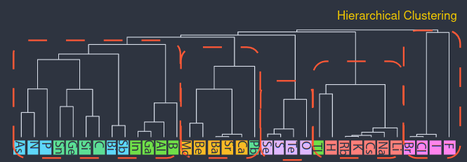
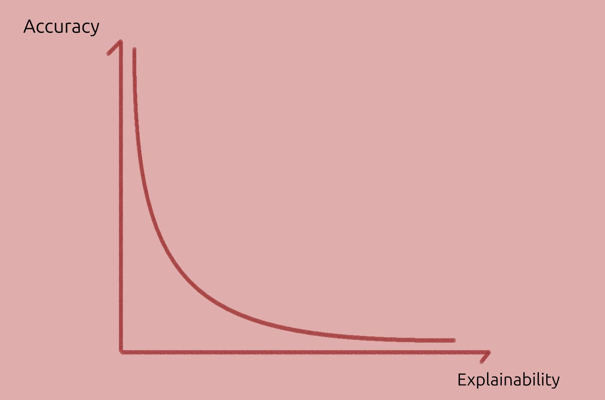
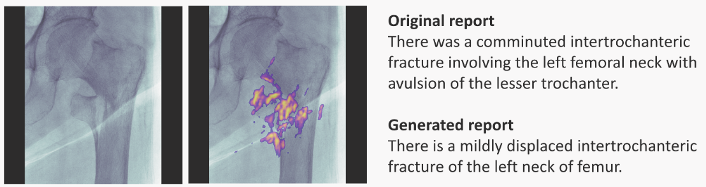

Notes
These are my thoughts on topics related to AI, XAI, AI for chemistry.
Organisation
-
The top-left hamburger icon toggles the table of contents.
-
At the bottom of posts there is a "Sources" which includes papers I read during the write up.
License
The prose is all under CC BY 4.0, external content is linked and if I find the license it is explicitly stated (in image captions, for example).
Tools Used
mdbook,- Krita to edit images,
- Computer Modern font or
Ubuntu > System UI > sans-serif, in that order of preference.
Atom vectors
The quest for machine representations of objects is a long standing research theme.
Vector representations are one kind of machine representation, and may be further broken down in: descriptors, which are expert-designed vectors, and embeddings, which are machine-learnt vectors .
This post focuses on embeddings since they require less human effort, and produce more general-purpose vectors.
Characteristics of Embeddings
Embeddings are usually real-valued, dense rather than sparse, non-human readable. They also form a structured vector-space, with semantically similar vectors close together, and meaningful vector-arithmetic.
It is desirable, but not always possible that they:
- Are interpretable,
- Can be generated with data scarce environments,
- Or are data-hungry but it is easily available,
Embeddings for Atoms
Embeddings for atoms were inspired by NLP models from the 2010s.
One such example was learning continuous vector representations of words (2013). They proposed an automated mechanism to generate word-vectors by absorbing information from that word's environment (neighbouring words).
In chemistry, embeddings can be used for downstream machine-learning tasks such as materials' property prediction, so they became popular in the field. Materials science has exploited the same ideas, for example:
properties of an atom can be inferred from the environments it lives in
(Atom2Vec, 2018),atoms are to compounds as words are to sentences
(SkipAtom, 2022),
The surprise was that similar words (or atoms) end up with similar vectors. The vectors also support semantically meaningful arithmetic operations, and became useful for downstream tasks. A classic example was:
vector("Queen") = vector("King") - vector("Man") + vector("Woman")
Both Atom2Vec (2018) and SkipAtom (2022) are unsupervised algorithms that obtain their atom vectors from databases of compounds. Atom vectors can be combined into compound vectors, and used for downstream tasks like property-prediction.
Classifications and Featurisers
The method used to generate our vectors is called a featuriser (we can use a featuriser or create our own). There are many common approaches:
- Simple: like hot-encoded, random;
- Human-designed: Composition-Based Feature Vector (CBFV) which are expert-curated vectors as in Jarvis, Magpie;
- Machine-learnt: embeddings, like SkipAtom.
Atom-vectors can be combined to describe compounds. Examples of combination methods are concatenation into a long vector and pooling of vectors (e.g. summing them up).
Comparing representations
A performance-comparison of vector representations is carried out in "Is domain knowledge necessary for machine learning materials properties?" (2020).
Their conclusion is: human-designed Composition Based Feature Vectors (CBFV like Jarvis and Olyinyk) outperform other methods if there isn't much data. This was prior to SkipAtom, but does include Atom2Vec.
Otherwise, performance in downstream tasks is similar to hot-encoded or random vectors.
(...) Although new, data-driven approaches are of interest, those studied here have yet to surpass CBFVs in terms of material property prediction with small data.
However, "Domain Independent XAI for Material Science" (2025) challenges that conclusion:
Our method challenges this perception: we obtain excellent classifiers that are interpretable and based on a small amount of training data without using any domain knowledge: (...)
They assert that one-hot encoded vectors can still achieve good results using small datasets, as long as the network is designed in the way they specify.
Thoughts
Human-designed vectors are easier to interpret.
Machine-learnt vectors require less effort but usually require more data to generate quality vectors.
Can we design machine-learnt interpretable vectors that are intrinsically interpretable?
Attention-masks and disentangled representations are closer to this.
Atom2Vec
A popular representation of atoms as vectors appeared in (2018): Atom2Vec.
They take compounds from a database, and build a matrix like the one below:1
| 1 | 1 | 1 | 0 | 0 | 1 | 0 | |
| 0 | 1 | 1 | 1 | 0 | 0 | 1 | |
| ... | 1 | 0 | 1 | 0 | 0 | 1 | 1 |
Let's describe using the compound as an example:
- When is the target, it generates , placed in the first column.
(2)is the stoichiometry of the element in the compound. - When is the target it generates , placed in the fourth column.
(3)is the stoichiometry of the element in the compound.
Since a particular atom binds to a very small fraction of all groups, each row is very sparse (high fraction of zeros). The same is valid for columns.
SVD Method
A normalised matrix is obtained by normalising each row vector independently. Using the euclidean norm (2-norm) allows for an intuitive similarity metric:
In their best-performing model, they compute , collect the -rows with the largest singular values, and compute where is the slice of rows of D with the largest singular values, and the corresponding columns.
Note
The strategy has certain beauty to it: the new f-vectors retain the inner product similarity but are denser. Though now, the columns have no explicit meaning.
Findings
- Similar atoms have similar vectors,
- Increasing the distance threshold in stages, vectors can be clustered hierarchically, from the leaf-nodes (atoms) downwards (groups).
- At some level, groups match the periodic table groups. (I don't know how the grouping is made unambiguous).
- At a very large distance, all atoms merge into a single group. The result is called dendogram.
{kind=link}

Image (modified) from Original Paper under CC-BY-SA 4.0. The atoms are rotated to make the image fit (rotated).
- Looking at the variation of some dimensions in the vectors, we can assign meaning to some of them.
Benches
Then, they compared to "empirical features" —a vector (group, period,...), padded to match their — with the task of predicting the DFT-found formation-energies of elpasolite crystals ().
Each solid was represented as a concatenation of atom vectors, and feed it to a hidden layer. (They also do other tasks.)
The paper ends with an interesting insight:
Structural information has to be taken into account to accurately model how atoms are bound together to form either environment or compound, where the recent development on recursive and graph-based neural networks might help.
-
It would be a binary matrix but the database contains some compounds multiple times and those are left duplicated (for some strange reason). ↩
SkipAtom
Atom2Vec was already described; now it's time for SkipAtom, another algorithm to learn atom embeddings.
Method
First, compounds are downloaded. Then, the Voronoi Decomposition is used to derive graphs from unit-cells, and from the graphs generate training-pairs. As they show in the paper:

Image from Original Paper under CC-BY-SA 4.0
Finally, each pair X-Y is used to train a shallow network to predict the target (Y) from the reference (X).

Image from Original Paper (slightly modified) under CC-BY-SA 4.0
- The resulting representation is dense and structured/semantic. This can be shown using dimensionality reduction techniques (PCA, t-SNE,..).
- The architecture is described as:
(...) single hidden layer with linear activation, whose size depended on the desired dimensionality of the learned embeddings, and an output layer with 86 neurons (one for each of the utilized atom types) with softmax activation. (...) minimizing the cross-entropy loss between the predicted context atom probabilities and the one-hot vector representing the context atom, given the one-vector representing the target atom as input.
Representations of Compounds (Pooling)
The analogy to NLP is that words are like atoms, and sentences are like compounds. Hence, distributed representations of atoms can be combined (pooled) into a vector representing a compound.
Vector-pooling options are:
- sum: where is the stoichiometry (can be fractional),
- mean: , i.e. divided by total number of atoms (can be fractional too).
- max: , reduces material matrix to vector. Selects max value of each column, each row being an atom in the compound.
The resulting compound representation is then used for training a feed-forward NN on different tasks. Also benchmarked using MatBench.
The pooling can also be done with hot-encoded vectors for atoms. This is done in ElemNet (mean pooling), and in Bag-of-atoms (sum pooling). The advantage: no training required, the disadvantage: the result is a sparse vector, and can be less accurate.
Results
They run two groups of tests:
- Embeddings' quality through elpasolite task. Where the atom vectors are concatenated into a compound vector (no pooling). The vectors train a network for property prediction. SkipAtom performs best here.
- Embeddings quality and pooling methods, through 9 prediction tasks. The results are:
- Pooling: sum and mean-pooling outperform max-pooling,
- Kind: Mat2Vec does best, and second SkipAtom,
- Bag-of-Atoms (sum pool of hot enc) does best in one task.
They conclude that these methods are most useful when no structural info is available.
However, there isn't a simple answer to which representation is best, it depends in the task. This is discussed in more detailed in Results.
Reference-based Coordinate Assignment
RCA is a dimensionality reduction method. Importantly, this implies we already have some representation available, which we may want to reduce.
The main idea could be conceptually represented as:
On the right hand side, the distance of each dimensional vector to is calculated. Each of these vectors is a centroid calculated from a cluster of embeddings.
The result, on the left hand side, is a reduced -dimensional sample vector .
An important point is raised in the paper:
To avoid degeneracies arising from equidistant configurations, the reference points must span the structure of the dataset.
Which means the reference vectors (centroids) should be able to reach any point in the original dataset, and not lose expressivity.
The method has useful properties:
- Compared to a large vector, it is cheaper to use to train a model (and can still be accurate),
- Compared to other dimensionality reduction methods, it is easier to extend,
- With certain care, the dimensions may be interpretable.
Comparison
SkipVec and Atom2Vec were previously discussed.
The paper Is domain knowledge necessary for machine learning materials properties? compared descriptors (same as vector representations) generated in different ways for downstream tasks.
They find hand-crafted descriptors useful for small and large datasets, but these are cumbersome to create —expert knowledge is required. One-hot and random-vectors perform similar to hand-crafted descriptors in large datasets.
With that, it seems wise to use hand-crafted descriptors for small datasets, and learnt, one-hot or random for larger ones.
SkipAtom evaluates on different approaches and tasks, and finds their method outperforms one-hot and random-vector, but does not test hand-crafted ones.
SkipAtom's comparison of representations is discussed below.
Simple classification
We have a simple classification of the available methods:
- Human-engineered vectors;
- Low effort vectors: one-hot encoded (ElemNet), random, Atom2Vec;
- Machine-learnt vectors (SkipAtom).
Atom2Vec may be in category 3 above; however, it is not an optimisation that creates them, it is a matrix factorisation.
Quality of Atom Representations
ElemNet (One-hot), Random, Atom2Vec, Mat2Vec and SkipAtom compared.
The atom-vectors were concatenated into compound representations, and these used to predict elpasolites (compounds) formation-energy.
SkipAtom outperformed other methods.
Pooling approaches
Vector pooling strategies were compared through 9 prediction tasks; 5 regressions, 3 classifications and OQMD Formation Energy prediction (also a regression).
- OQDM: bag-of-atoms, which is sum-pooling hot-enc atom vectors, is best.
The rest is summarised well in the paper:
(...) the models described in this report outperform the existing benchmarks on tasks where only composition is available (namely, the Experimental Band Gap, Bulk Metallic Glass Formation, and Experimental Metallicity tasks). Also, on the Theoretical Metallicity task and the Refractive Index task, the pooled SkipAtom, Mat2Vec and one-hot vector representations perform comparably [to the SOTA], despite making use of composition information only.
And an interesting observation:
The ElemNet architecture demonstrated (...) Perhaps surprisingly, the combination of a deep feed-forward neural network with compound representations consisting of composition information alone results in competitive performance when comparing to approaches that make use of structural information.
Use cases and limitations
Training does not rely on labelled data (unsupervised learning).
The model just needs the formula at inference time, and does fine with non-stoichiometric solids. So having the material's composition —but no structural information— we can still calculate some properties.
Similar compounds have similar vectors, which is useful. But without structural information, all isomers have the same vector, which is a limitation.
It is computationally cheap, and can help screen large number of compounds as a first selection step.
Explanations
Explanations can be defined as
Answers to a why-question1, with certain properties and structure.
The caveats include:
- The why-question may be implicit;
- Other question-types, e.g. how, what, should be included;
- Lessons and books explain without any question, and that the important part is to fill-a-gap in imaginary or present askers.
Questions can be hint what the gap is. The gap though, oversimplifies learning as transferring a missing piece of knowledge.
Characteristics of explanations
Generating explanations involve a cognitive and a social process. Below, I describe a version inspired by Explanation in artificial intelligence: insights from the social sciences.
The process of explaining involves:
- There is something to explain (explanandum),
- The explainer filters aspects of the explanandum deemed relevant (using prior knowledge),
- If the explanation is known, retrieve it and skip the rest.
- Generates possible answers (through explanation techniques),
- Weight the likelihood of each hypotheses,
- Possibly selecting the most likely until contradicted by experience or super-seeded (e.g. by a simpler explanation),
- Communicating it to an audience the social process
2–5 are also the cognitive process of an explanation, and may be called the process of understanding.
Now let's expand on the last step, the social process.
Social Process
The cognitive process and the specific case of inferring causes was described earlier. The remaining characteristic of explanations is the social process: communicating the answer.
When an explanation is communicated, the receiver may learn, adjust its knowledge, be more confused, reject it. For now though communication is considered independently of learning and knowledge.
Gricean Maxims are rules observed in good communication. These rules can also be used as a guide for good model explanations:
- Informative (Quantity): right amount of context and details,
- Truthful (Quality, or Fidelity): Try to make it true,
- Relevance (Relation): do not state things that aren't needed (provide insight),
- Manner (clarity): express it in elegant terms.
Importantly, the paper above notes that why-questions are usually contrastive questions e.g. phrased as why P rather than Q instead of why P, where the foil (Q) is frequently implicit.
Beyond these general aspects, any particular situation involves the asker acquiring certain knowledge, which is a learning process occurring inside the person. This isn't discussed here.
Explanatory success
There are aspects that tend to make explanations (and the belief in a hypothesis) more successful:
-
Simplicity: if it involves a shorter chain of causes, it is preferred,
-
Generality: if it explains other cases, it is preferred,
-
Testable: Can we do hypothesis testing via an experiment?
-
Prior knowledge/beliefs
- Conditions generation and veto of hypotheses. For example, "The drawer slides because it wants." may be ignored in different basis. Another illustrative example from The structure and function of explanations:
(...) If told that herring and tuna have a disease, naive participants are more likely to extend the property to wolffish, the more similar item, than to dolphins. However, among fishing experts, who can generate an explanation for why the property might hold (e.g. tuna contract the disease by eating infected herring), similarity is less predictive of property extensions. (...)
- Aids selecting what seems causally / explanatory relevant from what is not. Consider two light beams interfering on a Sunday. The day is irrelevant (usually), we disregard a confounding factor.
Metaphors: The Machine and The Agent
These are metaphors different audiences use to understand models, and can help generate explanations for them.
In the scientific and science-adjacent domains, models are conceptualised as machines: composed of parts, each with a function, a role.
Outside of science or the technical domain, they're conceptualised as human-like agents: explained in human terms, expected to be reliable, consistent.
In summary, explanations are answers to why-questions; good explanations respect the Gricean maxims, and will be dependent on the audience (their preferred style, expectations, expertise). The metaphors can help think of an explanation-style a given audience.
A table summary:
| Perspective | Model is a… | Preferred Explanation style | Audience |
|---|---|---|---|
| Scientific | Machine | Mechanistic, causal, formal | Experts |
| Human-facing | Agent | Intentional, narrative | Users, stakeholders |
Many other metaphors could be proposed.
Interesting resources
- Studies in the logic of explanation (1948), all the conceptual, i.e. non algebraic/logical analysis, is interesting.
- Explanations, Predictions and Laws (1948),
- On the mechanization of abductive logic (1973). The first page is quite interesting.
-
elearnspace. Connectivism: A Learning Theory for the Digital Age (2004); this is a very interesting theory of learning (connectivism), that also briefly summarises other approaches (behaviourism, cognitivism, constructivism).
- A more extensive work is at Connectivism (2021).
-
A Unified Approach to Interpreting Model Predictions (2017): paper proposing SHAP, that is, showing Shapley values as the best coefficients in linear combination of features, given 3 requirements (local accuracy, missingness and consistency),
-
Explaining Explanations: An Overview of Interpretability of Machine Learning (2018),
-
Producing radiologist-quality reports for interpretable artificial intelligence (2018): a "case study",
-
The paper "Explanation in artificial intelligence: insights from the social sciences" (2019, 38 pages). Once the why-cause is found (diagnosis), it may be communicated, making rules of conversation relevant: Gricean Maxims of Communication (blog-post), or Wikipedia's.
- The definition of explanation extends previous work by Lombrozo on The structure and function of explanations (2006).
-
The perils and pitfalls of explainable AI: Strategies for explaining algorithmic decision-making (2021): emphasis on socio-political aspects,
-
Interpretable and Explainable Machine Learning for Materials Science and Chemistry (2022),
-
Blog Posts: What is Explainable AI? (2022) and from IBM,
-
A Perspective on Explainable Artificial Intelligence Methods: SHAP and LIME (2024).
-
e.g. Studies in the logic of explanations (1948) ↩
Model Explainability
Explanations were defined and characterised in the previous post.
In Explainable AI (XAI), what primarily needs explanation is the model. Model explainability can be defined as:
The degree to which we can answer questions about the model's inner working and outputs.
The goal is to explain a model, and do it to some audience (which could be ourselves).
Trade-offs
In deep learning practice, explainability tends to be harder with more accurate models, since they tend to be more complex.
{kind=link}

Model accuracy vs Model explainability tradeoff.
Moreover, simple explanations can oversimplify its operation, or lack generality.
Explaining by Comparison
This framework is explained separately from methods to expand a bit more, but some of the methods are based on this logic behind.
Will it rain today?
Let's take an imaginary model, , the variable being the proportion of people with an umbrella, the model and the probability of rain.
It reaches low evaluation error and everyone is happy.
However, it is sometimes found that if the people don't take the umbrella it may still rain. Why? There may be different reasons:
- The model is doing correlation/association, but there wasn't correlation data available for such an event, so the predictions bad;
- With a large and diverse possible dataset, most questions may be answerable; but may not generalise out of distribution, restricting discoveries to certain interpolations.
- This is useful and discoveries have been made this way, but it clearly limits them to interpolation, and low success out of distribution.
- The model does not use causal information, like a weather forecast model would (not taking an umbrella doesn't make raining impossible).
- Using causal models may help to overcome the problems highlighted in the previous point. It's a bit like turning it into a law or theory expected to have found some deep structure that generates the data, even the unseen data.
The model is then modified to use causal variables instead (such as pressure and temperature), implicitly turning it into a causal model. But does it have all the causal inputs?
An expert may pick known causes-effects pairs as inputs-outputs to train a model, but others may unknowingly build a correlation model instead.
A subset of causal-variables may do for a good-enough approximation, and likely be robust for generalising out of distribution. In some cases though, it may be enough to have a correlation model, but they should be distinguished.
What if...?
A model that does correlation is more likely to fail out of distribution, because it has not learnt the correlation. Causal models should in principle have less of this issue.
Counterfactuals ask What would happen if this other input (fact) was used instead of the former one, or if one feature is changed slightly? They are also similar to What ifs (as the question shows).
For a model, counterfactuals yet another prediction, but the question is helpful because that is one way humans explain things. In a similar fashion to counterfactuals, we can compare with reference inputs.
Both of these are known techniques listed in the next section.
Higher-Level Aspects of Networks
The recognition of higher level patterns in graph can also span across methods.
These can even be inspired by other networks or graphs; for example, insect colonies can be considered as graphs of insect-nodes and pheromone-edges, and certain nodes have roles and tasks they specialise on. A similar situation can be postulated to happen in human networks, and in neural (biological and artificial) networks, where the node is affected by, and also affects other nodes.
A basic description of graph and networks and how there can be transfer learning between the different areas can be found in [Siemens - Connectivism][connectivism_siemens] and particularly in [Downes - Connectivism][connectivism_downes].
Overview of methods
Within the cognitive process of explanations, model explainability benefits from methods to identify causes or relevant properties.
For all audiences, we can group these methods into more general categories, and then go into specific cases for a certain audience.
Kinds of Methods
The survey Principles and practise of explaining ML models includes a table of method kinds. A modified version of the table is below:
| Kind | Advantages | Disadvantages | Question |
|---|---|---|---|
| Local explanations | Explains the model's behaviour in a local area of interest. Operates on instance-level explanations. | Explanations do not generalize on a global scale. Small perturbations might result in very different explanations. | How do small perturbations affect the output / prediction? |
| Examples | Representative items for each class provide insights about the model's internal reasoning. | Examples require human selection. They do not explicitly state what parts of the example influence the model. | How do inputs from different classes compare? And same? |
| Feature relevance | They operate on an instance level (some can operate globally). | Methods may make assumptions which do not hold (e.g. feature independence, linearity). | Which input features are most important? |
| Simplification | Simple surrogate models explain opaque ones. | Surrogate models may not approximate original models well. | Can we get local insights by using a simpler model? |
| Visualizations | Easier to communicate to non-technical audiences. Most approaches are intuitive and not hard to implement. | There is an upper bound on how many features can be considered at once. Humans must inspect plots to derive explanations. | Class boundaries? |
We should remember that:
Relying on only one technique will only give us a partial picture of the whole story, possibly missing out important information. Hence, combining multiple approaches together provides for a more cautious way to explain a model. (...) At this point we would like to note that there is no established way of combining techniques (in a pipeline fashion),
In the next posts, we focus on methods that aid causal attribution (or cognitive process) with a scientific audience in mind.
Map of XAI
An interesting map of XAI is given in the survey Principles and practice of explainable ML (2021).
Most classic ML models are in the dashed area under Model types column.
Classic ML models are usually transparent (intrinsically explainable) but may benefit from post-hoc (post training) explanations, such as visualising it. When transparency is key and the predictions are accurate enough, these may be preferred over DL models.
{kind=link}
The focus here though, is explaining deep learning models. These are usually opaque ("black-box") models, and their accuracy is usually higher than classic ML models.
In other words, classical ML and DL models each have their use-cases.
List of sources used in this blogpost
- [elearnspace. Connectivism: A Learning Theory for the Digital Age][connectivism_siemens] (2004); this is a very interesting theory of learning (connectivism), that also briefly summarises other approaches (behaviourism, cognitivism, constructivism).
- A more extensive work is at [Connectivism][connectivism_downes] (2021).
- Principles and practice of explainable machine-learning (2021, 25 pages): Sections 8–11 are a useful review of explainability methods.
- The Book of Why (2018): The introduction and first chapter were read in detail, only the part of interest for XAI (to my judgement) is discussed here, comparison and counterfactuals. It's interesting but may be more useful in other areas (like medical sciences, economics etc.)
Additive Feature Attribution Methods
These set of methods are linear approximations () to the original model (). Mathematically:
s are the effect of each binary feature in the output. Clarifications:
- s do not belong to , but to the approximation ,
- Two complex models , trained with same data likely have different s,
- Methods don't protect from a biased model.
Note: these could be called linear combination of binary features as well.
Best coefficients?
Existing additive feature methods (e.g. SHAP, LIME) calculate s differently, in turn yielding different coefficients. But...which one obtains the best coefficients ? A definition of best is needed.
The unified approach to interpret model predictions proposes that models should have local accuracy, missingness, consistency. With these requirements, they show that Shapley values are the best coefficients. Other methods violate some of these 3 properties.
The authors argue these properties lead to coefficients more intuitive for humans.
Method: SHAP
SHAP stands for SHapley Additive exPlanations, it is considered a feature attribution method rather than a simplification method. The Principles and practice of explaining ML states:
The objective in this case is to build a linear model around the instance to be explained, and then interpret the coefficients as the feature’s importance. This idea is similar to LIME, in fact LIME and SHAP are closely related, but SHAP comes with a set of nice theoretical properties.
The exact Shapley values result from an expensive combinatorial (see sources at the end). Approximations to the exact formula can be made, with extra assumptions, which may not hold!!:
- Assumption 1: Feature independence (implies non-multicollinearity).
- Shapley sampling values method,
- Quantitative Input Influence,
- Plus assumption 2, model linearity: Kernel SHAP (LIME + Shapley values)
- Assumption 2, model linearity: Shapley regression values.
SHAP provides both global (average across inputs) and local (for a given input).
Method: LIME
Local Interpretable Model Agnostic Explanation (LIME) and Generalised Linear Models (GLMs).1 Principles and practice of explainable ML describes LIME as:
LIME approximates an opaque model locally, in the surrounding area of the prediction we are interested in explaining, (...) using the resulting model as a surrogate in order to explain the more complex one. Furthermore, this approach requires a transformation of the input data to an "interpretable representation," so the resulting features are understandable to humans, regardless of the actual features used by the model (...)
It is considered a simplification method rather than a feature attribution method.
For LIME, the coefficients are found minimising an objective function. The coefficients resulting from the optimisation do not necessarily obey the 3 desired properties listed earlier.
Assuming feature independence and model linearity, the objective function can be modified and the SHAP values obtained through weighted linear regression (no slow combinatorics). This is called Kernel SHAP, and obeys the 3 properties listed earlier.
Fixes
- Normalised Moving Rate (NMR): tests the stability of the list against the collinearity. Smaller NMR means more stable ordering.
- Modified Index Position, in the paper's words:
[MIP] works similarly to NMR by iteratively removing the top feature and retraining and testing the model. Thereafter, it examines how the features are reordered in the model which implies the effect of collinearity.
These two methods (MIP, NMR) can be useful both in having a reliable sorting of features, and on selecting one —most stable— of several methods.
Definition of a few concepts
Aside: Collinearity and Non-linearity
Multicollinearity: one feature is a linear combination of one or more other features. For example, ; assuming linear independence would be an error. In the paper's words:
Indeed, some features might be assigned a low score despite being significantly associated with the outcome. This is because they do not improve the model performance due to their collinearity with other features whose impact has already been accounted for.
Non-linearity: output changes are not proportional to input changes. For example is non-linear, and fitting a line to it would be inaccurate. Some SHAP models can model this correctly.
Let's now look at other methods.
Sources
- A value for n-person games (1952)
- A Unified Approach to Interpreting Model Predictions (2017)
- [Principles and practice of explainable machine-learning][principles_and_practices] (2021, 25 pages): overview of many aspects of XAI,
- A Perspective on Explainable Artificial Intelligence Methods: SHAP and LIME (2025): conceptual aspects (weaknesses, strengths, assumptions) of the popular XAI methods SHAP and LIME.
-
Local in the name refers to being for a particular input, not Global which would be general. ↩
Methods II
Visual Explainability Methods
-
Saliency Maps: visually show which features are most important in a particular prediction. They can be generated for 1D, 2D and ND inputs. For example, here is for radiology:

Left-most: input image; next: input + saliency map; right-most: doctor's annotation (top) and RNN-model generated annotation (bottom). Image taken from paper.
-
Variations: Individual Conditional Expectation, Partial Dependence Plots, can help visualise decision boundaries; they only vary 1 or 2 variables. Quotes below are snippets from original:
-
[ICE] operates on instance level, depicting the model's decision boundary as a function of a single feature, with the rest of them staying fixed.
-
(...) employ [ICE] plots to inspect the model's behaviour for a specific instance, where everything except salary is held constant, fixed to their observed values, while salary is free to attain different values.
- PDPs are a similar idea, but the remaining features are average values over the dataset points, rather than particular values of an instance.
-
-
Validity Interval Analysis: another technique fitting the NN behaviour to try to extract explanations.
{kind=link}
Feature Relevance
- SHAP (possibly also LIME),
- Influence Functions.
Simplification
- LIME (possibly also SHAP). Explained in previous post,
- Anchors: the authors of LIME also proposed this nice method described by Principles and practice of explainability in ML:
-
A similar technique, called anchors, can be found in (Ribeiro et al., 2018). Here the objective is again to approximate a model locally, but this time not by using a linear model. Instead, easy to understand "if-then" rules that anchor the model's decision are employed. The rules aim at capturing the essential features, omitting the rest, so it results in more sparse explanations.
-
(...) decides to use anchors in order to achieve just that, generate easy-to-understand "if-then" rules that approximate the opaque model's behaviour in a local area (Figure 9). The resulting rules would now look something like "if salary is greater than 20 k£ and there are no missed payment, then the loan is approved.
-
Other methods
- Dimensionality Reduction: Principal Component Analysis, t-SNE, Dimensionality Reduction, Independent Component Analysis, Non-negative Matrix Factorisation.
- Counterfactuals: We replace the problem by a hypothetical opposite:
- A was the cause of B if, in an imaginary situation, A not happening implies B not happening.
- Change the instance slightly, but such that the model classifies the new instance in a different category.
-
(...) the applicant had missed one payment that led to this outcome, and that had he/she missed none the application would had been accepted
- Contrastive: Is about comparing carefully selected instances: Why P rather than Q?
-
In such cases, people expect to observe a particular event, but then observe another, with the observed event being the fact and the expected event being the foil.
- It's a good "question generator". What do you expect if X is done, rather than Y?
-
Explanation-producing Architectures
Architectures designed to make explaining part of their operation easier.
-
Using Explicit Attention: An attention layer/mask learns how parts of an input embedding pay attention to other parts. The layer is somewhat interpretable. In chemistry, it could learn which atoms connect (or pay attention to) other atoms.
-
Dissentangled Representations:
Disentangled representations have individual dimensions that describe meaningful and independent factors of variation.
—Explaining Explainability (2018). Examples of architectures are -VAE, INFOGan, capsule networks.
Sources
Connectivism
Connectivism1 is a learning theory where the central object of the theory are networks.
On this post, a few key ideas are presented; in the next post, a different interpretation of the theory is proposed.
Origins
Connectivism seems inspired by:
- The Internet, and later on the World Wide Web,
- These both were from the start problems about networking; heterogeneous devices or resources linked together,
- These technologies opened up access to a network of resources and people.
- The world changed towards quicker decision-making, but I argue pattern-matching, and thinking strategies have not changed much.
- The view of an individual as a network of neurons,
- The view of other systems as organisms, like organisations. The paper linked above states:
The organization and the individual are both learning organisms. Increased attention to knowledge management highlights the need for a theory that attempts to explain the link between individual and organizational learning.
As said, networks are the main object of the theory, so let's briefly define them:
Networks: collections of linked nodes or items.
What is considered a node is defined by us. It could be an individual, a group, a government, countries that trade, libraries, and so forth.
There are types of nodes and edges (or links) with different properties. For example, a node may have restricted access to a resource. There are also topologies with specific wiring pattern.
Knowledge and Learning
The theory views knowledge and learning as properties of networks, and defines them as:
-
Knowledge
- Network view: it is stored distributed across the net (in nodes, edges) in a latent manner. Distributed knowledge means that no single node or edge is uniquely responsible for a concept, rather, many parts of the whole network are. There will be nodes that are more relevant in some situation than other, but the knowledge is still distributed across nodes and links.
- Behavioural view: It is evidenced as an appropriate response to an input signal or stimuli.
-
Learning
- Network view: a change of network connections by exposure to experience and reasoning.
- Behavioural view: a persisting change in knowledge. Learning is evidenced through a change towards more appropriate behavioural responses (to a signal or stimuli.)
In a network, one node or link changing means much more has changed due to the ripple effects given by the links.
Discussion on whether all networks really learn are left for the next post. This one focuses on learning-human-networks and how the theory can help understand and design them.
A human in the net
A promising area for connectivism is as a paradigm to think of human networks (or human-and-resources networks), how to organise them (or letting them self-organise), which properties make nodes and the net grow and so forth.
It appears of especial important in the digital, interconnected world; but also classrooms, organisations, and social networks in general.
Let's consider the case of a human or agent embedded in a wider network such as a classroom, a group, community, organisation.
This networks can be seen as an metaphorically organism, or just as a whole: when the connections and nodes change and so does the behaviour in response to input signals, which in certain cases will imply learning, and formation of knowledge.
Example
Think of the response of an organisation in the event of a fire or an emergency.
The input (fire alarm) ripples through the network as the nodes act and propagate activity: learning isn't only intra-personal, the whole network can be said to have learnt in this example.
In the case of a classroom, this framework may aid us with questions such as:
- Centralised human-learning-network guided by teacher or a decentralised network? Should the teacher be more like a routing node?
- Are all items considered part of it, such as resources, or agents such as humans? Is it useful to split or join different networks?
- An open network where agents can change resources, or closed networks where they only have read permissions (if even so)?
A human is a net (theory of mind)
We also want to focus on the individuals. Can connectivism help?
Their general claim is that any network can learn by modifying connections and nodes of the network. And stores distributed knowledge.
So can parts of the brain, which are networks of neurons, and learning is later on evidenced on the behaviour of individuals.
Resources
- elearnspace. Connectivism: A Learning Theory for the Digital Age (2004); this is a very interesting theory of learning (connectivism), that also briefly summarises other approaches (behaviourism, cognitivism, constructivism).
- A more extensive work is at Connectivism (2021).
- Similarly, Connectivism: a knowledge learning theory for the digital age? (2016)
-
https://www.scispace.com/pdf/elearnspace-connectivism-a-learning-theory-for-the-digital-4dh6aurogw.pdf ↩
Refining Connectivism
Do all networks learn?
The notion that all networks learn, just by virtue of being networks seems off. It does not correspond to what most of us would call learning.
Is there some way to look at this, which makes more intuitive sense? Admittedly, there will be grey areas, but my view is that it is possible to conceptualise learning more clearly.
Different networks vary on:
- The breath of signals they are responsive to,
- The intensity of signals they are responsive to,
- How varied their response is,
- How much directionality there is to the process,
- Possibly others (still thinking on it).
The hypothesis is that, what we ordinarily call a learning system maps to:
High-complexity systems that respond to a wide variety of input signals in a wide variety of ways, and change in a way that makes future reactions appropriate (which is left to intuition for the moment).
Usually, networks of complex systems or of hybrid systems also change complex ways and will also be learning systems.
On the other hand, low-complexity systems change in narrow and even predictable ways whichare not considered learning systems.
In a sense learning is not the mechanism, but it's just the label. Complex systems that change directionally and in various ways learn; simple systems that change --by the same mechanism-- but do not behave in complex ways are not learning systems.
Just reinforce it: the proposal is that learning mainly points to high-complexity, but the actual kind of change could be the same in both systems.
We could say that there is a threshold of a binary function were systems are considered at learners. There will also be, certainly, grey areas.
With that, which one learns?
We can apply the previous criteria to a large number of cases, and see whether we are satisfied:
Do biological networks learn?
It is generally agreed that learning involves changes in the wiring pattern, or degree of wiring, and this change can happen in different ways, and it is built into the system (brain) e.g. by Hebbian learning. We can take this case as our paradigmatic learning system.
Do artificial neural networks (ANNs) learn?
During training phase, connections (weights) are updated towards a goal through backpropagation, and the network behaviour (predictions) change. General-purpose process a wide variety of signals are are closer to learning systems than narrow AIs. Both only learn during training phase.
Does a colony of insects learn?
Complex organisms communicate and change their behaviour: Ants propagate pheromones which adapt their behaviour; humans similarly can do it by imitation of some kind. This "node update" propagates out, and may return to update the node further. Finally the network is seen as reacting appropriately.
But is this "reaction", or emergent behaviour, the same as learning? Only if the change is permanent. The variety of signals they process and the behaviours is quite varied and certainly are learning systems.
Does the world wide web, or a library learn?
The system will learn only if it is designed to do so. For example, after a certain event (like a query) a program may change the system to respond more appropriately in the future.
When humans have designed them to adapt (say with software) these have limited learning ability and change in response to a narrow variety of events, and are not quite learning systems. Considered without the programs, these wouldn't have any learning at all.
Hybrid systems such as humans-web, or humans-library systems certainly are learning systems.
The structure, interface, reliability that they have though, matters a lot in terms of how usable they are to humans, and so forth. These properties are still important across most network systems, be it learning networks or not. In other words, all non-learning networks can become learning networks when associated with other systems that can change them
Does the electric grid learns? Same as above.
Does a molecule or a material, which can be represented as a graph, learn?
Signals can change them. But even if we define appropriate as increasing the likelihood to persist / survive, the ways in which it reacts and the number of stimuli it responds to are narrow, and won't be learning systems.
Do mixes of nodes made of proved-learning-systems (say humans) and non-learning systems (say a book), learn?
Yes, especially if we consider a company, a community and so forth.
So all the different kinds may be considered to learning, if they permanently change in response to a stimuli and this adequately changes future responses.
Resources
- elearnspace. Connectivism: A Learning Theory for the Digital Age (2004); this is a very interesting theory of learning (connectivism), that also briefly summarises other approaches (behaviourism, cognitivism, constructivism).
- A more extensive work is at Connectivism (2021).
- Similarly, Connectivism: a knowledge learning theory for the digital age? (2016)
Discovering Inorganic Solids
These are some of my opinions and ideas after reading two papers by Rosseinsky group:
- Discovery of Crystalline Inorganic Solids in the Digital Age (2025).
- Element selection for crystalline inorganic solid discovery guided by unsupervised machine learning of experimentally explored chemistry (2021)
Introduction
In solid-state chemistry, some elemental compositions (phase fields) are more likely to lead to isolable compounds than others.
Deep learning models can help differentiate between these two groups, and lead researchers to the promising areas. The models can be trained for this task with data from ICSD, the Inorganic Crystal Structure Database.
Such models would improve the allocation of resources when exploring new phase fields.
Searching for new compounds
Some definitions will be used:
- Phase field: the elements selected. Can be thought as the labels for cartesian axes.
- Composition: the values or ranges of values in each axes. Once we have the axes' labels we can explore values computationally.
We can search for compounds by analogy and by exploration, characterised in the table below:
| Method | Starting Point | Concept | Success Rate |
|---|---|---|---|
| By analogy | Parent Compound | Change composition, same structure | Higher |
| By exploration | Structural Hypothesis / Idea | Try composition and structure | Lower |
Analogy Based Search
The analogy-based search involves:
- Starts from a naturally occuring mineral, or previously discovered structures,
- Change its composition retaining the crystalline structure. For example, can be expanded by analogy to , conserving the crystalline structure.
With respect to analogy-based search, the paper notes:
(...) it is straightforward to expand known structures by analogy through substitution, but the initial identification of such structures, which cannot be by analogy, is an entirely different question (...)
And usefully,
The properties of the analogy-based materials can be superior to those of the initial discovery (...)
Exploratory Search
The ML-aided exploratory-search involves:
- Human selects elements or phase field e.g. , ,...
- A VAE decodes the seed-input into similar compounds (nearby in latent space).
- The reconstruction loss is used as a ranking metric for the generated compounds.
- Computationally search in composition-space (Crystal Structure Prediction, CSP), find low-energy probe structures, e.g. .
- Can use physical constraints (like max n of atoms).
- Calculate thermodynamically stable1 probe structure (this step is complex). Hints experimentalists of promising region.
- Try synthesis, and find somewhat similar structures to the computationally suggested one.
We can describe the exploration steps as a flow as well:
---
config:
flowchart:
htmlLabels: true
---
flowchart LR
A(("`**Input Phase**
(e.g Na-Ca-O)`")) --> B(VAE)
B -- "`**Ranked Phases**`" --> D(Distance Metric)
D -- "`**Compositions**`" --> F(Thermodynamics)
F -- "`**Probe**`" --> H(Try synthesis)
style A fill:#123456,color:#f4f4f4,stroke-width:0px
-
With respect to the convex hull. ↩
Discovering Inorganic Solids
In depth workflow
Dataset
The atom descriptors are taken from a atom-property database and include atomic weight, valence, ionic radius, and others.
The 4-element crystals are selected from ICSD, and only the elements are retained. For example, would become for training.
The data is scaled 24 fold by performing all possible permutations of 4 elements, i.e. 4! (factorial). This enhances learning, reduces overfitting.
Architecture: Variational Autoencoder (VAE)
Here the emphasis is on exploiting a pattern and not on interpretability, the human expert evaluates the compounds afterwards.
An autoencoder consists of two parts, an encoder, and a decoder. The overall task is to reconstruct the original vector from the compressed representation.
The encoder compresses the 148 vector into a 4D vector (latent vector), and the decoder decompresses it into 148D. The euclidean distance is then computed as a measure of error, and the gradient is used to correct the weights.
Since the model is trained only on phase fields that lead to isolable materials, it is biased towards those compounds.
Just like a single-class classifier using cat-only images, the VAE only sees positive instances, and no learning comes from predicting negatives.
Inference Stage
Input structures are passed with a bit of noise each time and the reconstruction loss is used to rank them for synthetic exploration.
A larger reconstruction loss means the phase is less likely to be synthesizable, since it learn to reconstruct only synthesizable regions.
The rank will also tell how different the compound is to the original.
Example of Results
After VAE ranking, the decision to explore Li-Sn-S-Cl phase field was based on the high conductivity of a related ternary field Li-Sn-S.
The following image shows calculations performed, each a tripod, in a red background. Dark red represents little enery barrier from the convex hull, bright red the opposite.
Most solids found by the group or by others are in dark areas of the plot with tripods overlaying.
The magenta point A in the image is the new phase found, not far from the probe structure which was .

Image from Original Paper under CC-BY-SA 4.0
Machine learning for molecular and materials science
Useful snippets from the Perspective paper Machine learning for molecular and materials science.
Representations of atoms, molecules, materials
The process of converting raw data into a format more suitable for an algorithm is called feature engineering.
The more suitable the representation of the input data, the more accurately can an algorithm map it to the output data.
Selecting how best to represent the data may require insight into both the underlying scientific problem and the operation of the learning algorithm, since it is not always obvious which choice of representation will give the best performance
Some representations:
- Coulomb Matrix: atomic nuclear repulsion information.
- Graphs: connectivity of molecules.
- String representations: SMILES, SELFIES,..
- Solid-state unit-cells: Representations based on radial distribution functions, Voronoi tessellations, and property-labelled materials fragments (...)
In the solid-state, the conventional description of crystal structures by translation vectors and fractional coordinates of the atoms is not appropriate for ML, since a lattice can be represented in an infinite number of ways by choosing a different coordinate system.
Areas
They see possible impact in a few areas:
- Synthesis: retrosynthesis, crystallisation predictions, etc.
- Characterisation: for example analysing images (CV)
- Modelling: reducing time and improving accuracy of calculations
- Drug discovery, Drug design, Inverse Design, Property Prediction,..
Algorithms
- Naive Bayes:
Bayes’ theorem provides a formal way to calculate the probability that a hypothesis is correct, given a set of existing data.
- Nearest Neighbour:
In nearest neighbour (k-NN) methods the distances between samples and training data in a descriptor hyperspace are calculated. k-NN methods are so-called because the output value for a prediction relies on the values of the k nearest neighbours, where k is an integer.
- Decision Trees:
are flowchart-like diagrams used to determine a course of action or outcomes. (...) with branches indicating that each option is mutually exclusive. (...) Both root and leaf nodes contain questions or criteria to be answered.
-
Kernel methods are a class of algorithms; whose best known members are the support vector machine (SVM) and kernel ridge regression (KRR).
-
Artificial neural networks (ANNs) and deep neural networks (DNNs). (...) Learning is the process of adjusting the weights so that the training data are reproduced as accurately as possible. (...) The values of internal variables (hyperparameters) are estimated beforehand using systematic and random searches, or heuristics.
Best Practices
TL;DR from the paper "Best practices in machine learning for chemistry" (2021), a very similar paper by the same authors is "Machine learning for molecular and materials science".
- For Datasets
- Ensure dataset remains available, and is version-tagged (they change)
- For home-made or mixes, explain the process of generation
- Describe any data curation, balancing, augmentation, and so on.
In the Best Practices paper they say:
For reasons of reproducibility, it is crucial that these databases use some mechanism for version control (e.g. release numbers, Git versioning, or timestamps) as part of the metadata and maintain long-term availability to previous versions of the database.
-
For Representations
- Try more than one, compare
- Use very basic ones as baseline representation to compare (example random or one-hot)
-
Justify Model
- More complex isn't always better
- Compare to baselines (mean for regression, most common class for classification)
- Compare to very simple models and to SOTA
- Any interpretability we can offer?
-
Evaluate Model
- Have 3 separate datasets: for training and optimising, for evaluating during training and detect overfitting, and testing for testing which should represent where it will be applied (should test what we want it to succeed on).
- Test extrapolative learning: leave out some class entirely, or train until a cutoff date and evaluate with dates after that.
- Test intrapolative learning: with varied test sets
- Mindful of shorcut learning (have varied test dataset).
-
Reproducibility: Results and code must be made available and reproducible
They also state:
In all reports, remember to cite the methods and packages employed to ensure that the development community receive the recognition they deserve.
They provide a great checklist but since the license is a mess I am not including it here.
Example
Take ElemNet as an example and go through the checklist.
- Database:
- They provide a link, but no timestamped or git version,
- No info on curation or preprocessing (we may assume none was performed).
- Representations:
- They justify and compare the results to baselines.
- Model:
- Describe why is new and useful idea,
- Describe architecture.
- Evaluation:
- Show training and different hyperparameters,
- Studied which compounds model is accurate vs not.
- Reproducibility: Results and code are available.
The comparison would be improved if they also ran a deep learning model with human-made descriptors.
They also included other useful statistics like inference time.
Databases and Benchmarks
Bear in mind when using databases what this Machine learning for molecular and materials science states:
Data may require initial pre-processing, during which missing or spurious elements are identified and handled.
Identifying and removing such errors is essential if ML algorithms are not to be misled by their presence.
- The Machine Learning for molecular and materials science aggregates many DBs and such in tables at the end
- Pillong, M. et al. A publicly available crystallisation data set and its application in machine learning. CrystEngComm (2017).
- ICSD: Inorganic Crystal Structure Dataset
- Jain, A. et al. The materials project: a materials genome approach to accelerating materials innovation.
- The materials project database https://materialsproject.org/
- Benchmarking materials property prediction methods: the matbench test set and automatminer reference algorithm.
- Matbench benchmark: https://hackingmaterials.lbl.gov/automatminer/datasets.html
- Materials design and discovery with high-throughput density functional theory: the open quantum materials database (OQMD)
Also ElemNet lists materials-and-properties' databases (experimentally observed and hypothetical):
DFT calculations have offered opportunities for large-scale data collection such as the Open Quantum Materials Database (OQMD), the Automatic Flow of Materials Discovery Library (AFLOWLIB), the Materials Project, and the Novel Materials Discovery (NoMaD); they contain DFT computed properties of of experimentally-observed and hypothetical materials. In the past few decades, such materials datasets have led to the new data-driven paradigm of materials informatics
ElemNet describes OQDM as well (bold is mine):
OQMD is an extensive high-throughput DFT database, consisting of DFT computed crystallographic parameters and formation enthalpies of experimentally observed compounds taken from the Inorganic Crystal Structure Database (ICSD) and hypothetical structures created by decorating prototype structures from the ICSD with different compositions.
CompChem Map
This is a draft of areas I'd like to organise in some taxonomy.
Finding Useful Molecules
- Get a Materials Database(s), either method
Method 1: Direct (Compounds to Properties)
- Use DFT to guide towards one that fits the requirements (slow if we have billions of compounds.),
- Or use the DB to train a NN to make predictions (needs labelled data for training)
- Or similarity metrics to find new (similar) molecules.
- ...
Method 2: Inverse (Properties to Compounds)
- Use the gradient to update embedding.
- Maximise or Minimise the needed properties.
The paper's approach is more towards a Direct method. It is a method to generate embeddings that can then be used to train a neural network to predict properties.
This can be arranged (not very tidily) in a chart:
---
config:
flowchart:
htmlLabels:false
---
flowchart TB
A[("Compounds Database")]
subgraph Direct["`**Direct**`"]
direction LR
B("`Electronic Structure
Predictions`")
C("`Train NN on DB
(with labelled data)`")
D("`Use similarity metrics to
find nearby candidates`")
end
subgraph Inverse["`**Inverse**`"]
direction TB
E("`Train VAE to create
smooth surface`")
E --> F("`Link MLP to
latent vector`")
F --> G("`Minimise or Maximise pps.
by changing vector`")
end
A --> Inverse
A --> Direct
Unsupervised-Learning of Representations of Atoms
Other investigations of unsupervised learning of machine representation of atoms are:
- Zhou, Q. et al. Learning atoms for materials discovery. (2018).
- Tshitoyan, V. et al. Unsupervised word embeddings capture latent knowledge from materials science literature. (2019).
- Chakravarti, S. K. Distributed representation of chemical fragments. (2018).
- Butler K. et al. Distributed Representations of Atoms and Materials for Machine Learning. (2022).
Supervised-Learning of Representations of Atoms
- Jha, D. et al. ElemNet: deep learning the chemistry of materials from only elemental composition. (2018).
- Goodall, R. E. & Lee, A. A. Predicting materials properties without crystal structure: deep representation learning from stoichiometry. (2020).
Visualising High Dimensional Data
- PCA
- Dimensionality Reduction
- t-SNE
Reference of some of the techniques, book cited in some papers: 18. Hastie T, Tibshirani R, Friedman J (2001) The Elements of Statistical Learning, Springer Series in Statistics (Springer, New York).
Queries
- How to build useful machine-representations of atoms?
- would just be a 1D vector embedding, likely of little use. But are there taxonomies of representations (including a matrix per atom?)
Missing
- Splits for datasets, validation / testing.
- Balancing datasets.
- Evaluation metrics, loss functions,
- ROC classification performance metric
Ideas
-
Train and show the results of atoms for vectors in a website? With some button to load each dataset?
-
List of examples of successful applications of ML in chemistry
- Anything for which there are useful datasets from experiments or from calculation:
- orbital energies,
- geometries,
- formation energy,
- energy band-gap
- Anything for which there are useful datasets from experiments or from calculation: